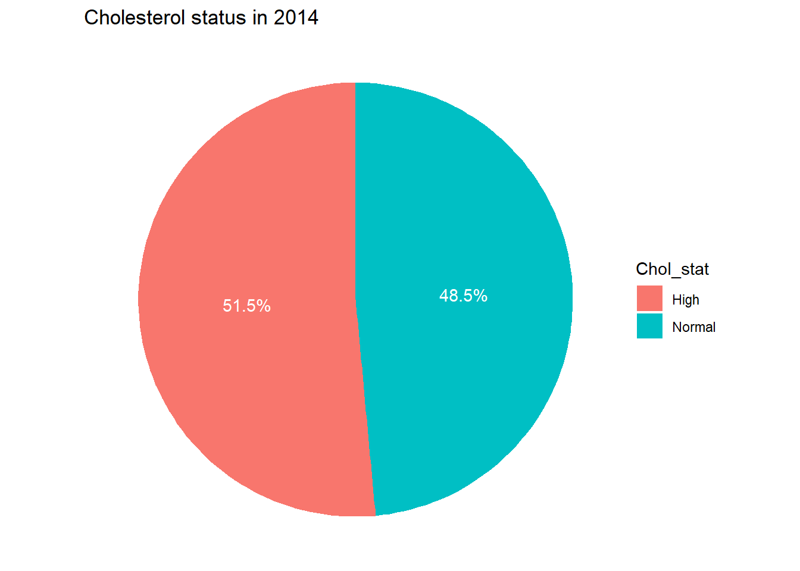
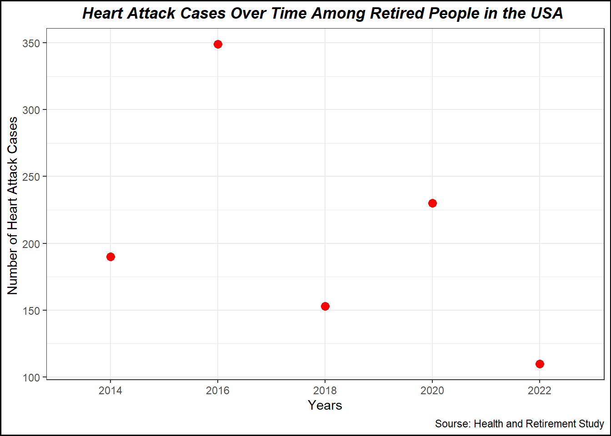

The data is obtained from The University of Michigan Health and Retirement Study (HRS). HRS is a longitudinal panel study that surveys a representative sample of approximately 20,000 people in America, supported by the National Institute on Aging (NIA U01AG009740) and the Social Security Administration.
Through its unique and in-depth interviews, the HRS provides an invaluable and growing body of multidisciplinary data that researchers can use to address important questions about the challenges and opportunities of aging.
I plan to conduct survival analysis for retired people who had high Cholesterol in 2014 until they Heart Attack.
Install all packages needed
Install and library all packages needed in this section.
install.packages("tidyverse")
The following package(s) will be installed:
- tidyverse [2.0.0]
These packages will be installed into "C:/Users/mn27712/OneDrive - University of Georgia/DATA BACKUP/MACBOOK AND IPHONE_/Desktop/MADA2025/muhammadnasir-mada2025/renv/library/R-4.3/x86_64-w64-mingw32".
# Installing packages --------------------------------------------------------
- Installing tidyverse ... OK [linked from cache]
Successfully installed 1 package in 43 milliseconds.
library(tidyverse)
Warning: package 'tidyverse' was built under R version 4.3.3
Warning: package 'ggplot2' was built under R version 4.3.3
Warning: package 'tibble' was built under R version 4.3.3
Warning: package 'tidyr' was built under R version 4.3.3
Warning: package 'readr' was built under R version 4.3.3
Warning: package 'purrr' was built under R version 4.3.3
Warning: package 'dplyr' was built under R version 4.3.3
Warning: package 'stringr' was built under R version 4.3.3
Warning: package 'forcats' was built under R version 4.3.3
Warning: package 'lubridate' was built under R version 4.3.3
── Attaching core tidyverse packages ──────────────────────── tidyverse 2.0.0 ──
✔ dplyr 1.1.4 ✔ readr 2.1.5
✔ forcats 1.0.0 ✔ stringr 1.5.1
✔ ggplot2 3.5.1 ✔ tibble 3.2.1
✔ lubridate 1.9.4 ✔ tidyr 1.3.1
✔ purrr 1.0.2
── Conflicts ────────────────────────────────────────── tidyverse_conflicts() ──
✖ dplyr::filter() masks stats::filter()
✖ dplyr::lag() masks stats::lag()
ℹ Use the conflicted package (<http://conflicted.r-lib.org/>) to force all conflicts to become errors
install.packages("ggplot2")
The following package(s) will be installed:
- ggplot2 [3.5.1]
These packages will be installed into "C:/Users/mn27712/OneDrive - University of Georgia/DATA BACKUP/MACBOOK AND IPHONE_/Desktop/MADA2025/muhammadnasir-mada2025/renv/library/R-4.3/x86_64-w64-mingw32".
# Installing packages --------------------------------------------------------
- Installing ggplot2 ... OK [linked from cache]
Successfully installed 1 package in 44 milliseconds.
library(ggplot2)library(here)
Warning: package 'here' was built under R version 4.3.3
here() starts at C:/Users/mn27712/OneDrive - University of Georgia/DATA BACKUP/MACBOOK AND IPHONE_/Desktop/MADA2025/muhammadnasir-mada2025
install.packages("patchwork") # This package is to redefine "/" operator for plot arrangement
The following package(s) will be installed:
- patchwork [1.3.0]
These packages will be installed into "C:/Users/mn27712/OneDrive - University of Georgia/DATA BACKUP/MACBOOK AND IPHONE_/Desktop/MADA2025/muhammadnasir-mada2025/renv/library/R-4.3/x86_64-w64-mingw32".
# Installing packages --------------------------------------------------------
- Installing patchwork ... OK [linked from cache]
Successfully installed 1 package in 43 milliseconds.
library(patchwork)
Warning: package 'patchwork' was built under R version 4.3.3
install.packages("writexl")
The following package(s) will be installed:
- writexl [1.5.1]
These packages will be installed into "C:/Users/mn27712/OneDrive - University of Georgia/DATA BACKUP/MACBOOK AND IPHONE_/Desktop/MADA2025/muhammadnasir-mada2025/renv/library/R-4.3/x86_64-w64-mingw32".
# Installing packages --------------------------------------------------------
- Installing writexl ... OK [linked from cache]
Successfully installed 1 package in 44 milliseconds.
library(writexl)
Warning: package 'writexl' was built under R version 4.3.3
library(haven)
Warning: package 'haven' was built under R version 4.3.3
Loading Dataset
This dataset is longitudinal survey. In this analisys, I take three years, 2014, 2016,and 2018. I will read data per year then combine them.
In this part, I will load the dataset using here() function.
Reading data for 2014 and 2016 needs several steps, because the data is in STATA format, and also we need to match with dictionary. ### Data for 2014
## set path dictionary dict.file2014 <- here::here("data-exercise","data", "H14C_R.dct")file.exists(here::here("data-exercise", "data", "H14C_R.dct")) # If we want to check the working path
[1] TRUE
# Read the dictionary file df.dict2014 <-read.table(dict.file2014, skip =1, fill =TRUE, stringsAsFactors =FALSE)# Set column names for dictionary dataframe colnames(df.dict2014) <-c("col.num","col.type","col.name","col.width","col.lbl")# Remove last row which only contains a closing }df.dict2014 <- df.dict2014[-nrow(df.dict2014),]# Remove first row df.dict2014 <- df.dict2014[-1,]# Extract numeric value from column width fielddf.dict2014$col.width <-as.integer(sapply(df.dict2014$col.width, gsub, pattern ="[^0-9\\.]", replacement =""))# Convert column types to format to be used with read_fwf functiondf.dict2014$col.type <-sapply(df.dict2014$col.type, function(x) ifelse(x %in%c("int","byte","long"), "i", ifelse(x =="float", "n", ifelse(x =="double", "d", "c"))))##data file data.file2014 <- here::here( "data-exercise","data", "H14C_R.da") # Read the data file into a dataframedf2014 <-read_fwf(file = data.file2014,fwf_widths(widths = df.dict2014$col.width, col_names = df.dict2014$col.name),col_types =paste(df.dict2014$col.type, collapse =""))# Add column labels to headers#attributes(df2014)$variable.labels <- df.dict2014$col.lblhead(df2014)
## set path dictionary dict.file2016 <- here::here("data-exercise","data", "H16C_R.dct")file.exists(here::here("data-exercise", "data", "H16C_R.dct")) # If we want to check the working path
[1] TRUE
# Read the dictionary file df.dict2016 <-read.table(dict.file2016, skip =1, fill =TRUE, stringsAsFactors =FALSE)# Set column names for dictionary dataframe colnames(df.dict2016) <-c("col.num","col.type","col.name","col.width","col.lbl")# Remove last row which only contains a closing }df.dict2016 <- df.dict2016[-nrow(df.dict2016),]# Remove first row df.dict2016 <- df.dict2016[-1,]# Extract numeric value from column width fielddf.dict2016$col.width <-as.integer(sapply(df.dict2016$col.width, gsub, pattern ="[^0-9\\.]", replacement =""))# Convert column types to format to be used with read_fwf functiondf.dict2016$col.type <-sapply(df.dict2016$col.type, function(x) ifelse(x %in%c("int","byte","long"), "i", ifelse(x =="float", "n", ifelse(x =="double", "d", "c"))))##data file data.file2016 <- here::here( "data-exercise","data", "H14C_R.da") # Read the data file into a dataframedf2016 <-read_fwf(file = data.file2016,fwf_widths(widths = df.dict2016$col.width, col_names = df.dict2016$col.name),col_types =paste(df.dict2016$col.type, collapse =""))
Warning: One or more parsing issues, call `problems()` on your data frame for details,
e.g.:
dat <- vroom(...)
problems(dat)
# Add column labels to headers#attributes(df2016)$variable.labels <- df.dict2016$col.lbl head(df2016)
## set path dictionary dict.file2022 <- here::here("data-exercise","data", "H22C_R.dct")file.exists(here::here("data-exercise", "data", "H22C_R.dct")) # If we want to check the working path
[1] TRUE
# Read the dictionary file df.dict2022 <-read.table(dict.file2022, skip =1, fill =TRUE, stringsAsFactors =FALSE)# Set column names for dictionary dataframe colnames(df.dict2022) <-c("col.num","col.type","col.name","col.width","col.lbl")# Remove last row which only contains a closing }df.dict2022 <- df.dict2022[-nrow(df.dict2022),]# Remove first row df.dict2022 <- df.dict2022[-1,]# Extract numeric value from column width fielddf.dict2022$col.width <-as.integer(sapply(df.dict2022$col.width, gsub, pattern ="[^0-9\\.]", replacement =""))# Convert column types to format to be used with read_fwf functiondf.dict2022$col.type <-sapply(df.dict2022$col.type, function(x) ifelse(x %in%c("int","byte","long"), "i", ifelse(x =="float", "n", ifelse(x =="double", "d", "c"))))##data file data.file2022 <- here::here( "data-exercise","data", "H22C_R.da") # Read the data file into a dataframedf2022 <-read_fwf(file = data.file2022,fwf_widths(widths = df.dict2022$col.width, col_names = df.dict2022$col.name),col_types =paste(df.dict2022$col.type, collapse =""))# Add column labels to headers#attributes(df2022)$variable.labels <- df.dict2022$col.lbl #head(df2022)
Variables that needed in this study include Household Identification number, Respondent Person Identification number, High Cholesterol Status, Years first had heart attack, Month first had heart attack, Ever had heart attack.
#data2014da2014 <- df2014 %>%select("HHID", "PN", "OC283", "OC040", "OC258", "OC259") %>%rename(hhid = HHID, pn = PN, chol= OC283, ha = OC040, year = OC258, month= OC259)da2014 <-lapply(da2014, function(x) { attributes(x) <-NULL; x }) #delete the column lables from dataset, because their position is incorrect after deleting some variables. da2014 <-as.data.frame(da2014) # Convert back to a dataframe#data2016da2016 <- df2016 %>%select("HHID", "PN", "PC283", "PC040", "PC258", "PC259") %>%rename(hhid = HHID, pn = PN, chol= PC283, ha = PC040, year = PC258, month= PC259)da2016 <-lapply(da2016, function(x) { attributes(x) <-NULL; x }) #delete the column lables from dataset, because their position is incorrect after deleting some variables. da2016 <-as.data.frame(da2016) # Convert back to a dataframe#data2018 da2018 <- df2018 %>%select("hhid", "pn", "QC283", "QC040", "QC258", "QC259") %>%rename( chol = QC283, ha= QC040, year = QC258, month = QC259) # I rename the column names because in this year, they use different name. da2018 <-lapply(da2018, function(x) { attributes(x) <-NULL; x }) #delete the column lables from dataset, because their position is incorrect after deleting some variables. da2018 <-as.data.frame(da2018) # Convert back to a dataframeda2020 <- df2020 %>%select("HHID", "PN", "RC283", "RC040", "RC258", "RC259") %>%rename( hhid = HHID, pn = PN, chol = RC283, ha= RC040, year = RC258, month = RC259) # I rename the column names because in this year, they use different name. da2022 <- df2022 %>%select("HHID", "PN", "SC283", "SC040", "SC258", "SC259") %>%rename( hhid = HHID, pn = PN, chol = SC283, ha= SC040, year = SC258, month = SC259) # I rename the column names because in this year, they use different name.
Combine dataset
# Perform a full join step-by-stepmerged_data <- da2014 %>%full_join(da2016, by =c("hhid", "pn"), suffix =c("_2014", "_2016")) %>%full_join(da2018, by =c("hhid", "pn"), suffix =c("", "_2018")) %>%full_join(da2020, by =c("hhid", "pn"), suffix =c("", "_2020")) %>%full_join(da2022, by =c("hhid", "pn"), suffix =c("", "_2022")) # View resulthead(merged_data)
hhid pn chol_2014 ha_2014 year_2014 month_2014 chol_2016 ha_2016 year_2016
1 000003 020 5 NA NA NA NA NA NA
2 010001 010 1 NA NA NA NA NA NA
3 010003 030 1 NA NA NA NA NA NA
4 010004 040 5 NA NA NA NA NA NA
5 010013 040 1 NA NA NA NA NA NA
6 010013 010 1 5 1995 NA NA NA 995
month_2016 chol ha year month chol_2020 ha_2020 year_2020 month_2020
1 NA NA NA NA NA NA NA NA NA
2 NA NA NA NA NA NA NA NA NA
3 NA 1 NA NA NA 1 NA NA NA
4 NA 5 NA NA NA 1 NA NA NA
5 NA 1 NA NA NA 1 NA NA NA
6 NA NA NA NA NA NA NA NA NA
chol_2022 ha_2022 year_2022 month_2022
1 NA NA NA NA
2 5 NA NA NA
3 5 5 NA NA
4 1 NA NA NA
5 5 NA NA NA
6 NA NA NA NA
I realize that we only need cholesterol status in 2014, therefore, I want to delete cholesterol in 2016 and 2018
df <- merged_data[, !(colnames(merged_data) %in%c("chol_2016", "chol", "chol_2020", "chol_2022"))] %>%# deleting cholesterol from 2016 and 2018 rename(ha_2018 = ha, year_2018 =year, month_2018 = month) # I rename variables from 2018
Exploratory data
I want to create pie chat to show persons having high cholesterol in 2014.
table_1 <-table(df$chol_2014)chol_df <-as.data.frame(table_1) %>%select(1,2)colnames(chol_df) <-c("Chol_stat", "Count") # rename the column chol_df <- chol_df %>%filter(!Chol_stat %in%c(8, 9)) %>%mutate(Chol_category =case_when( Chol_stat ==1~"Normal", # If Chol_stat is 1, it's "Normal" Chol_stat ==5~"High", # If Chol_stat is 5, it's "High"TRUE~"Other"# For any other value, label as "Other" (optional) )) %>%select(Chol_category, Count) %>%rename(Chol_stat = Chol_category)plot1 <-ggplot(chol_df, aes(x ="", y = Count, fill = Chol_stat)) +geom_bar(stat ="identity", width =1) +# Create bar chartcoord_polar(theta ="y") +# Convert to pie chartgeom_text(aes(label =paste0(round(Count /sum(Count) *100, 1), "%")), position =position_stack(vjust =0.5), color ="white") +# Add percentage labelslabs(title ="Cholesterol status in 2014") +theme_void()figure_file =here("data-exercise","result","figures","chol_status.png")ggsave(filename = figure_file, plot=plot1)
Saving 7 x 5 in image
print(plot1)

I want to create plot number of person having Heart Attack in each year
table_2 <-table(df$ha_2014)table_3 <-table(df$ha_2016)table_4 <-table(df$ha_2018)table_5 <-table(df$ha_2020)table_6 <-table(df$ha_2022)# Create the combined tabletable_ha <-data.frame(status =c("1"), # Heart attack status`2014`= table_2[c("1")], # Heart attack status counts for 2014`2016`= table_3[c("1")], # Heart attack status counts for 2016`2018`= table_4[c("1")], # Heart attack status counts for 2018`2020`= table_5[c("1")], # Heart attack status counts for 2020`2022`= table_6[c("1")] # Heart attack status counts for 2022) %>%rename(ha_2014 =X2014, ha_2016=X2016, ha_2018=X2018, ha_2020 =X2020, ha_2022 =X2022) %>%mutate(ha_case =ifelse(status==1, "heart attack", "No heart attack")) %>%select(ha_case, everything()) %>%# Move ha_case to the first columnselect(-status) %>%# Remove the status columnselect(-ha_case) # I delete it because it prevent to create long tabel # Create long table table_ha <- table_ha %>%pivot_longer(cols =starts_with("ha_"), # Reshape the ha_ columns into long formatnames_to ="year", # Column for yearsvalues_to ="count") %>%select(year, count) # I want to change the value into numeric yeartable_ha <- table_ha %>%mutate(years =case_when( year =="ha_2014"~"2014", year =="ha_2016"~"2016", year =="ha_2018"~"2018", year =="ha_2020"~"2020", year =="ha_2022"~"2022" )) %>%select(years, everything())table_ha <- table_ha %>%select(-year)head(table_ha)
After creating long table, I want to create plot to show the number of heart attack cases each observation year.
plot2 <-ggplot(table_ha, aes(x = years, y = count)) +geom_line(size =1, color ="blue") +geom_point(size =3, color ="red") +labs(title ="Heart Attack Cases Over Time Among Retired People in the USA ", x ="Years", y ="Number of Heart Attack Cases ",caption="Sourse: Health and Retirement Study") +theme_minimal() +theme_bw()+theme(plot.title =element_text(hjust =0.5, face ="bold.italic")) +# to adjust the title position, size, and colortheme(plot.background =element_rect(color ="black", fill =NA, linewidth =1)) # to create frame of the plot
Warning: Using `size` aesthetic for lines was deprecated in ggplot2 3.4.0.
ℹ Please use `linewidth` instead.
Saving 7 x 5 in image
`geom_line()`: Each group consists of only one observation.
ℹ Do you need to adjust the group aesthetic?
print(plot2)
`geom_line()`: Each group consists of only one observation.
ℹ Do you need to adjust the group aesthetic?

Now, I want to perform inclusion and inclusion criteria. I will include person who had high cholesterol level in 2014, but they did not have heart attack (disease free) in 2014.
# Step 1: Filter the datasetdf_filtered <- df %>%filter(chol_2014 ==1, # High cholesterol in 2014 ha_2014 ==5) # No heart attack in 2014data <- df_filtered